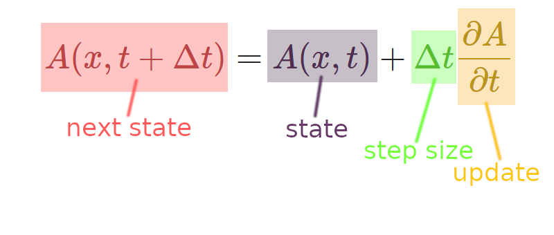

Non-Platonism can be found in many systems
Generic formula: state + update

The Euler method for numerical integration. The next state of the system is the current state plus the update (rate of change) proportional to a step size.
- Non-Platonic self-organizing behavior, i.e. patterns of interactions that construct and maintain themselves via feedback, occur in many dynamic systems.
- The examples I'll show loosely resemble (and in some cases exactly fit into) numerical integration of PDEs with the Euler method.
- Systems of interest are CA-like in that they are built from locality and dynamics rules. (Note the similarity to natural physics).